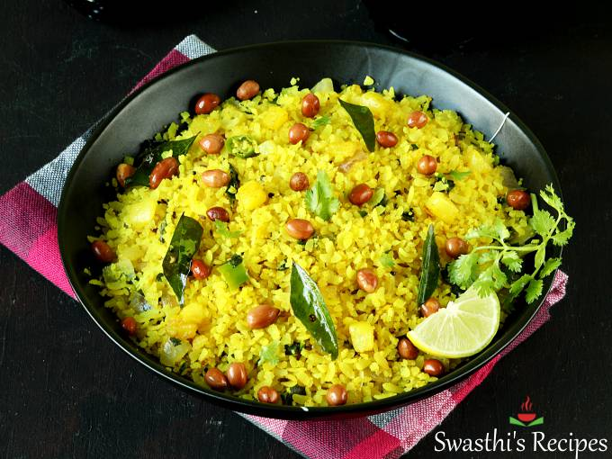

Upma
Upma is a dish of thick porridge from dry-roasted semolina or coarse rice flour. It often contains carrots, green peas, cashews, and onions.
Read moreYou don't need my life story, you just need the recipe.
Welcome to my website detailing simple weeknight Maharashtrian recipes.
Upma is a dish of thick porridge from dry-roasted semolina or coarse rice flour. It often contains carrots, green peas, cashews, and onions.
Read more
Poha also known as Pohe is a quick Indian Breakfast made with flattened rice, onions, spices, herbs, lemon juice & peanuts.
Read more
Sabudana khichdi is a popular Maharashtrian dish made from soaked tapioca pearls, potatoes, roasted peanuts, and spices. Typically this dish is eaten during fasting times because it can be filling and high in carbohydrates despite being gluten free.
Read more